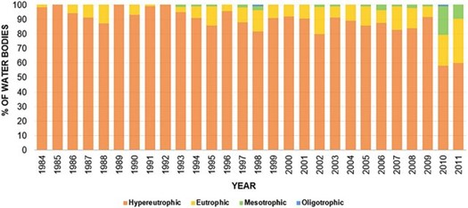

, coincidiendo con la aparición de numerosos
cuerpos de agua en la zona de explotación (Figura 3)
, coincidiendo con la aparición de numerosos
cuerpos de agua en la zona de explotación (Figura 3) .
.Se realizó un trabajo de investigación de la evolución de la calidad de agua en lagunas de gravera del Parque Regional del Sureste de Madrid mediante el uso de imágenes Landsat TM5 (Echavarría-Caballero et al., 2019) cuyos resultados muestran que la calidad del agua de los estanques dentro del Parque Regional del Sureste (PRSE) mejoró a lo largo de la serie de tiempo estudiada según su transparencia medida según el Disco de Secchi (Figura 1).
Figura 1.% masas de agua y su calidad clasificadas según la OCDE
Según la clasificación de la OCDE, en 1984, casi todas las masas de agua fueron clasificadas como hipereutróficas (98,3%). Se observa una mejora notable a lo largo de los años, de modo que en 2010 y 2011 el número de masas de agua en estado hipereutrófico se ha reducido casi a la mitad. En 2010 aparecieron por primera vez masas de agua clasificadas como oligotróficas. En 2011, último año del periodo de estudio, el 60% de los cuerpos de agua eran hipereutróficos, el 30,7% eutróficos y el 9,3% mesotróficos.
Figura 2.Calidad según Disco de Secchi de algunas lagunas del PRSE en 6 fechas
Así, parece que la declaración del PRSE de 1994 ha sido una medida efectiva y ha tenido un impacto positivo en la evolución de la calidad
a lo largo de los años. Sin embargo, se observó un período de estancamiento entre 1989 y 2009 (Figura 2), coincidiendo con la aparición de numerosos
cuerpos de agua en la zona de explotación (Figura 3).
Figura 3.Evolución del área de los cuerpos de agua en el periodo estudiado (1984-2011)
Una vez que se estabilizó el área de los cuerpos de agua después de 2009 (Figura 3), la calidad del agua aumentó significativamente en el área de estudio.
Si bien parece que la relación entre la calidad del agua y la creación de estanques de pozo, es decir, la explotación como gravera, en el PRSE es evidente,
existen varios factores ambientales que tienen gran influencia, por lo que se recomienda ampliar la investigación en este sentido.
El siguiente visor permite ver para cada año el estado trófico según la clasificación de la OCDE, y el estado ecológico según la directiva marco del agua para cada una de las lagunas del PRSE. Se puede apreciar cómo ha sido la evolución en número sino también en términos de calidad.